Gargantua.
Agnès Dubois, Faust Cardinali, Thierry Vendome, Amira Sliman
Parcours Bijoux Paris 2026
Agnès Dubois, Faust Cardinali, Thierry Vendome, Amira Sliman
Gargantua, au-delà du personnage truculent imaginé par Rabelais, incarne une figure hautement symbolique ancrée dans l’inconscient collectif français, qui dépasse son seul statut littéraire.
Dans l’œuvre de Rabelais, il illustre l’abondance, voire l’excès, la satire du pouvoir et la liberté intellectuelle en réaction aux dogmes.
Métaphore de la curiosité humaine, du désir et de la joie, autrement dit, de l’élan vital incarné, Gargantua s’inscrit dans une dimension intemporelle et universelle, tel un archétype culturel qui véhicule des valeurs hautement humanistes, porteuses d’un idéal de tolérance et de progrès.
À l’heure où notre monde traverse des mutations profondes, chacun de nous se voit confronté à la nécessité de faire des choix, de se repositionner. Cela soulève des questions essentielles : qu’est-ce qui nous définit en tant qu’êtres humains ?
Quatre artistes bijoutiers d’expressions et d’horizons différents, invitent le public à découvrir une exposition célébrant nos penchants gargantuesques et nos excès sous toutes leurs formes, à les examiner pour en extraire ce qui nous définit comme les porteurs de cet héritage humaniste, à les envisager comme une véritable ode à la vie.
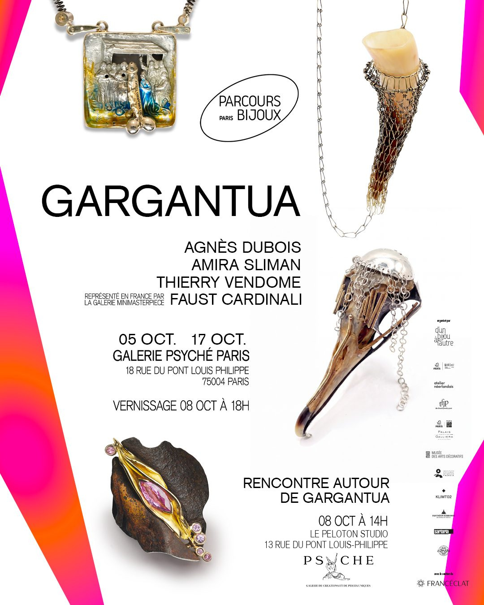

Crédit photo : Manon Dubois
Ma vocation de créatrice indépendante débute dès 2001 après une formation de deux ans à l’AFEDAP Paris.
J’envisage le bijou comme un champ plastique à part entière, un médium à travers lequel j’observe la relation entre le corps et le monde qui l’environne. Tel un marqueur identitaire, il agit comme un véritable vecteur de communication, capable de signifier autant que de parer.
Ma priorité vise à dépasser la dimension sociale, codifiée, à exacerber la singularité de ces objets intimement reliés à la sphère charnelle et spirituelle de l’individu. J’aime penser qu’ils sont la quintessence d’une vérité profonde, une affirmation de soi.
Mes créations, souvent minimalistes, agissent comme révélateurs du corps dans sa présence sensible et se muent en sculptures habitées, en éléments de narration silencieuse.
L’équilibre, la sensorialité, la notion de plaisir, la cohésion entre espace corporel et extracorporel nourrissent ma recherche symbolique et formelle. J’explore l’art du lien : celui entre l’objet et le mouvement, le geste et l’émotion, entre l’artiste et la personne qui s’approprie physiquement l’objet.
Mon travail est régulièrement présenté dans des galeries dédiées au bijou contemporain à Paris et en région.
J’ai pris part aux précédentes éditions du festival Parcours Bijoux, notamment en 2020 et 2023, en tant que curatrice de projets collectifs.
Cornucopia, entre abondance et équilibre
La corne d’abondance, métaphore du ressort littéraire de l’œuvre de Rabelais, désigne l’axe par lequel Agnès Dubois s’est emparée du monument littéraire Gargantua, construit sous le signe de l’exubérance.
Cinq créations sont ici présentées, élaborées autour de la notion d’équilibre, en résonance avec la forme gigogne de ce récit polymorphe.
Dans des emboîtements de formes récurrentes qui rythment chaque pièce comme un leitmotiv obsédant, l’artiste sonde l’idée de paradoxe sur lequel repose le récit. Elle dépouille le corps de l’œuvre de ses excès d’artifices pour en livrer une ossature où elle fait place au vide. Tel un fil tenseur, un élément structurant, ce vide induit une circulation, une clarté par laquelle l’artiste prend le contre-pied de l’idée même de profusion.
De la déconstruction jaillit l’essentiel du propos : la quête du précieux caché derrière l’outrance, de la substantifique moelle ou, autrement dit, de la nécessaire et fragile liberté d’expression. Un questionnement qui fait écho à notre époque, paradoxalement tiraillée entre l’attrait de l’abondance exponentielle et les injonctions de la tempérance si chère à Rabelais.
Collier. Argent 925 et perles d’eau douce. 2026.
Rabelais est le maître de l’oxymore. S’inspirant du paradoxe instillé par l’auteur, de la forme gigogne du récit, ces trois créations reposent sur des emboîtements nés de la répétition d’une même forme synthétique. Pareille à une ossature, cette structure contient potentiellement la forme pleine de la corne d’abondance, la désignant sans vraiment la montrer.
Construite autour des notions de croissance, de rythme, et d’équilibre, cette forme donne à voir la mutation progressive du vide vers le plein, à l’image des modèles sociétaux imparfaits et de l’idéal vers lequel il est possible voire salutaire de tendre.
Crédit photo : Agnès Dubois
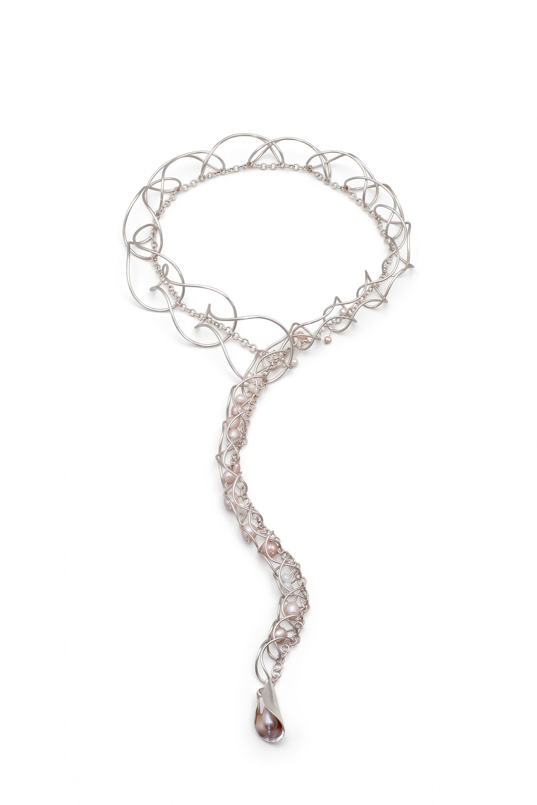
Bracelet. Argent 925. 2026.
Comme le suggère l’auteur, tout se lit et se relie entre les lignes, au-delà des apparences. Entre les strates et les empilements de ces constructions, le vide devient un principe tenseur, révélateur de l’ambivalence qui nous gouverne.
Crédit photo : Agnès Dubois
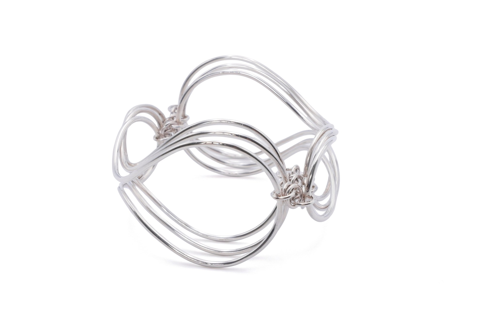
Boucles d’oreilles. Argent 925 et perles d’eau douce. 2026.
Dans cet espace vacant, émerge le paradoxe du contenant et du contenu : des éléments d’une autre nature, mobiles, vivants et précieux, symbolisent la substantifique moelle, vérité philosophique au cœur de la quête universelle et intemporelle.
Crédit photo : Agnès Dubois
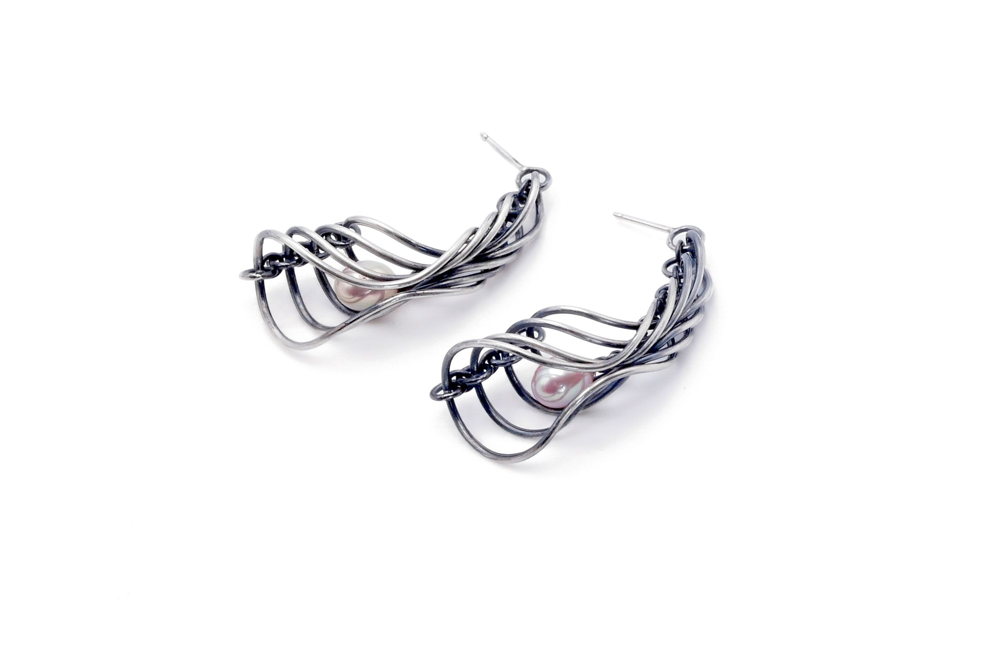
Bijou pour l’oreille gauche. Argent 925. 2026.
La fable originelle de la naissance de Gargantua, par son caractère grotesque, cherche à activer le sens critique du lecteur. L’objectif de Rabelais y transparaît : aiguillonner les consciences et remettre en question les croyances et les postulats.
Le titre de ce bijou unique - Helix et matrix - destiné à l’oreille gauche en référence directe au récit, est un clin d’œil à l’humour de l’auteur. Le dessin de l’oreille qui s’approche sensiblement de celui de l’utérus, se retrouve dans l’élément modulaire constitutif de quatre des pièces présentées. Sa structure aérienne agit comme une mise en abyme visuelle qui combine le lieu de la conception et des origines et celui de l’écoute, de la compréhension du monde.
Crédit photo : Agnès Dubois
Collier et bijou de buste. Laiton patiné et corne de bovin. 2026.
Le vide sert ici encore de fil conducteur. Il se concrétise dans un contenant fait d’emmaillements multiples : une nasse souple, ouverte aux deux extrémités, qui change de consistance dès qu’elle accueille la forme de la corne. Métaphore de l’abondance, cette dernière est elle-même vide en son centre, créant un autre espace à remplir et une nouvelle mise en abyme.
La métaphore des Silènes - ces objets ambigus, à l’apparence faussement insignifiante renfermant un contenu d’une valeur insoupçonnée – renvoie à la structure même du récit rabelaisien. Sous des dehors grotesques, l’œuvre abrite un message précieux : celui du libre arbitre comme voie de l’émancipation face aux systèmes en place. Ce propos résonne avec une force particulière à l’ère de la surinformation, où des outils aussi bénéfiques que délétères, à l’image de l’intelligence artificielle, s’avèrent capables d’altérer notre jugement et de nous égarer.
Crédit photo : Agnès Dubois
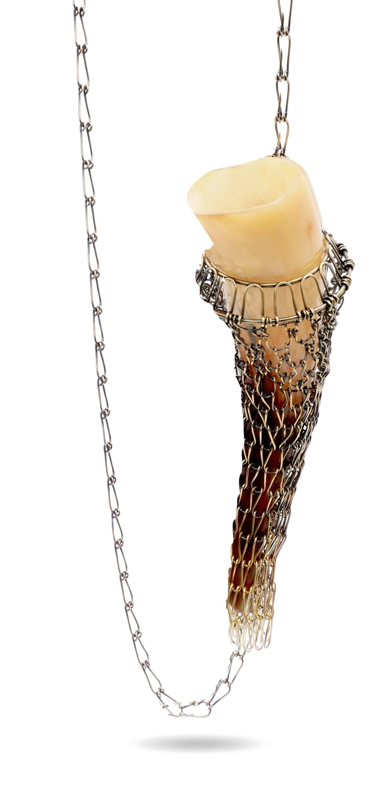

Né à Paris en 1961. Artiste pluridisciplinaire, je me forme en tant que sculpteur, peintre et orfèvre.
Mon travail allie dessin et écriture dans une réflexion artistique qui explore la « plastification poétique » de la société, matérialisant un temps à la fois archéologique et « futurible ».
Mes œuvres incarnent simultanément la mémoire du passé, la présence du présent et une vision du futur, dans une seule et même expression plastique et conceptuelle.
J’utilise des matériaux hétérogènes : polychlorure de vinyle, polyester, métaux précieux. Ces éléments, en apparence éloignés, se fondent pour dépasser les frontières entre peinture, sculpture et orfèvrerie — des disciplines autonomes mais profondément complémentaires.
Mes créations traduisent la liquidité du monde contemporain, marquée par les blessures historiques, psychologiques et géologiques, révélant de nouvelles formes de « polycorps » : une conception de l’art non pas in situ, mais in tempore.
Mes œuvres figurent dans d’importantes collections en Europe et en Asie.
Représenté en France par la Galerie MiniMasterpiece.
Cinq œuvres autour de la démesure
À l’occasion de GARGANTUA, exposition réunissant plusieurs artistes contemporains dans le cadre de @parcoursbijoux, Faust Cardinali dévoile cinq œuvres inédites conçues spécialement pour l’événement.
Inspirées par l’univers de François Rabelais, ces œuvres explorent la démesure, l’exagération, la monstruosité, le désir et le débordement. Mais chez Faust Cardinali, Gargantua n’est pas une simple référence littéraire : c’est une manière de penser et de créer.
L’artiste s’empare de l’esprit rabelaisien — son langage, son humour, son goût de la transgression et son imagination débridée — pour faire du bijou un territoire où les frontières entre sculpture, peinture, objet, performance et mémoire deviennent poreuses.
À travers ces cinq œuvres, trois temporalités se rencontrent : la Renaissance, l’histoire de l’art moderne et contemporain, et l’histoire personnelle de l’artiste. Le résultat est un ensemble à la fois érudit, provocateur, ludique et profondément personnel.
Pendentif. Gargantua 2026.
Avec « Le Baptême de Pantagruel », Faust Cardinali détourne avec irrévérence l’iconographie sacrée.
L’œuvre prend pour point de départ « Le Baptême du Christ » de Piero della Francesca, conservé à la National Gallery de Londres, ainsi qu’une copie réalisée par Giò Bini, maître en bijouterie de Faust Cardinali, disparu en janvier dernier.
Introduite au cœur du pendentif, l’image est radicalement transformée : l’artiste substitue au motif central de l’iconographie chrétienne une représentation phallique. Ce geste, volontairement provocateur, s’inscrit dans une recherche ancienne de Faust Cardinali autour de l’eau, du corps, de l’érotisme et de la création.
Le sacré et le profane se rencontrent, se confrontent et finissent par produire une nouvelle image. Un blasphème joyeux, en quelque sorte : une manière profondément rabelaisienne de faire exploser les codes pour libérer l’imaginaire.
Crédit photo : Alessandro Schinco
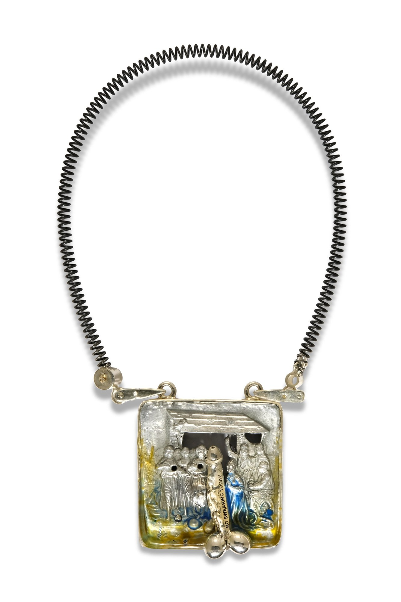
Pendentif-collier. Gargantua 2026.
Avec « Ambigua Nascentia », Faust Cardinali poursuit son dialogue avec Piero della Francesca à partir de « La Madonna del Parto », tout en convoquant l’œuvre de Lucio Fontana.
L’histoire de cette pièce commence en 1986, lorsque l’artiste réalise une petite série de pendentifs inspirés de la célèbre Vierge enceinte. Le ventre de la Vierge devient alors une ouverture, une fente, un espace qui fait directement écho aux « Concetti spaziali » de Lucio Fontana. Cinq siècles d’histoire de l’art se trouvent ainsi comprimés dans un bijou.
Mais l’œuvre porte également une mémoire intime : une petite relique datant de 1986 — le bouchon d’une bouteille provenant d’une fête à l’Altomare, ancien atelier de Faust Cardinali — est intégrée à cette nouvelle création.
Renaissance, art spatial et autobiographie se rencontrent dans une œuvre qui devient une véritable capsule temporelle, où naissance, corps, ouverture et mémoire se confondent.
Crédit photo : Alessandro Schinco
Bague. Gargantua 2026.
La bague « Gargantua » naît d’une fonte aléatoire d’aluminium réalisée à l’intérieur d’un creuset en forme de nid, en argent.
Sa forme évoque certaines architectures fantastiques et organiques de Jérôme Bosch, entre créature, construction et paysage mental. Deux lettres, GA, apparaissent à sa surface.
Réalisées en argent et partiellement ensevelies sous le polyester, elles prennent l’apparence d’un sceau ou d’une inscription archéologique : elles surgissent de la matière tout en semblant y être prisonnières.
La matière devient presque langage. Elle frappe, elle parle, elle vit.
Crédit photo : Alessandro Schinco
Bracelet — bijou, outil et dispositif de performance. Gargantua 2026.
Avec « Bât-Starter II (Gargantua) », le bijou quitte définitivement son statut d’objet destiné à être porté. Il devient outil et dispositif de performance.
Lors du vernissage, le bracelet sera utilisé dans une installation consacrée à une matière que Faust Cardinali considère depuis toujours comme une véritable valeur poétique : la perte.
Dans l’orfèvrerie, la transformation de la matière implique nécessairement des pertes : limaille, poussières, résidus de polissage, matière disparue lors de la fonte ou du travail du métal. Pour Faust Cardinali, ces résidus ne sont pas des déchets. Ils deviennent une matière artistique.
Récupérées, conservées et réintroduites dans son travail de peintre et de sculpteur, ces poussières métalliques participent à la couleur, à la texture et à la matérialité de ses œuvres.
Crédit photo : Alessandro Schinco
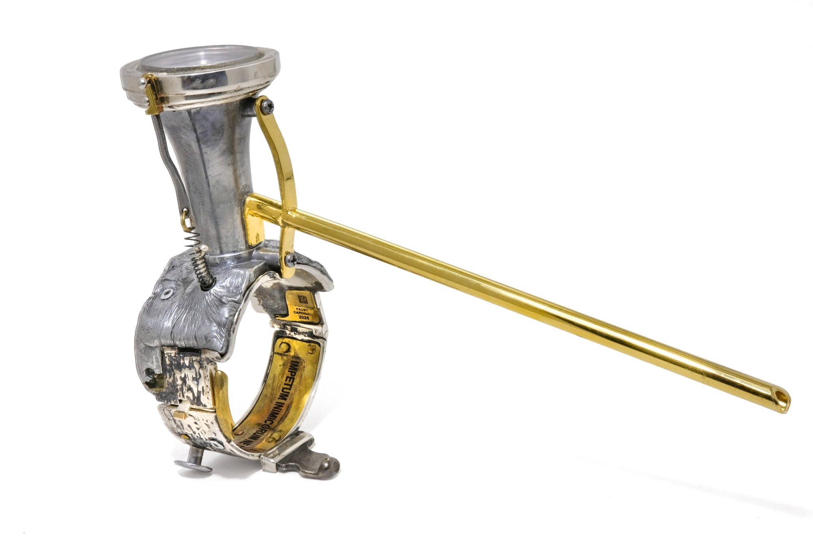
Sculpture-pinceau. Accompagne Bât-Starter II.
Le bracelet est accompagné de « Marta », une petite sculpture-pinceau intégrant un véritable pinceau, destiné à pousser, rassembler et déplacer les poussières de métal. Le bijou agit, produit et transforme.
Crédit photo : Alessandro Schinco
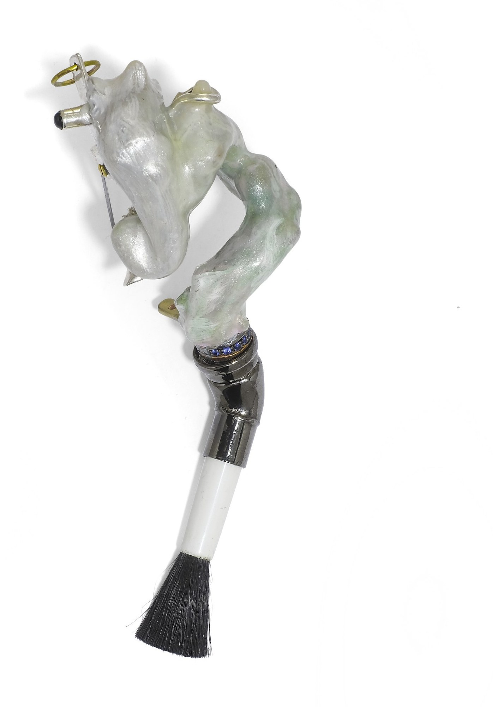

Crédit photo : Olivier Foulon
MES BIJOUX SONT DES ACTES POÉTIQUES
Je ne cherche pas tant à représenter le visible qu’à exprimer les émotions qui me traversent lorsque j’observe le monde.
Depuis les années 1980, je travaille avec des matières « vivantes », celles qui portent en elles une histoire. Fragments d’éclats d’obus, clous rouillés, fils de fer barbelé, minéraux… Je les dévie de leur trajectoire. Je les fais entrer dans une nouvelle histoire.
Je ne cherche pas à effacer ce qu’elles ont été. Au contraire, les marques laissées par leur passé, leurs accidents, leurs transformations deviennent mon matériau de création. Je les choisis pour ce qu’elles provoquent en moi : un grain, une forme, une couleur, une émotion.
J’aime faire surgir, à travers ces matières, des rencontres entre mémoire et futur, entre ce qui demeure et ce qui se transforme.
Le corps tout entier est engagé. En portant l’une de mes créations, j’invite chacun à se l’approprier, à y projeter sa propre histoire et à en poursuivre le récit.
Le corps devient alors le lieu où l’œuvre continue.
Cinq temps d’une vie
Thierry Vendome se saisit de GARGANTUA pour imaginer cinq œuvres inédites. Il y trouve le point de départ d’une réflexion sur le temps d’une vie : ce qui nous précède, ce que nous traversons et ce que nous choisissons d’en faire.
Les cinq pièces dessinent un chemin. Le Passage en marque le commencement, celui de la naissance et du franchissement. Sur les traces et Avant nous confrontent notre existence aux vestiges laissés avant nous et au temps immense de la matière. Avec Deviens vient le temps de l’accomplissement. Agapes clôt le parcours dans l’abondance, la couleur et la célébration de la vie.
Ammonites vieilles de millions d’années, ferrures anciennes, rouilles, opales, perles et ors font dialoguer des temporalités différentes. Fidèle à sa démarche, Thierry Vendome ne cherche pas à effacer l’histoire de ces matières : il la déplace, la transforme et les fait entrer dans un nouveau récit.
De la naissance à la joie d’être vivant, ces cinq œuvres interrogent ainsi moins le temps qui passe que la manière dont chacun choisit de l’habiter.
Bague-pendentif. Corolle de rouille, saphir rose (3,66 ct), saphirs roses, or jaune plissé.
Tout commence par un passage.
Dans le récit de Rabelais, Gargantua vient au monde d’une manière extraordinaire : il naît par l’oreille de sa mère. Cette naissance improbable m’a donné le point de départ de la première pièce de la série. La corolle de rouille s’ouvre autour du saphir rose comme un seuil à franchir, entre un avant et un après. Le Passage est ce lieu où débute la vie.
Crédit photo : Olivier Foulon
Cravate. Ammonites du Maroc, ferrures de mobilier ancien, or jaune, argent.
Nous arrivons dans un monde qui porte déjà des traces.
Une légende autour de Gargantua m’a inspiré cette pièce : elle raconte que le géant aurait marqué le paysage de son passage. J’ai retrouvé un écho de cet imaginaire dans les ammonites, vestiges d’un monde disparu. À leurs spirales, j’ai associé les volutes d’anciennes ferrures, elles aussi marquées par le temps, comme pour poursuivre une histoire.
Crédit photo : Olivier Foulon
Bague-pendentif. Ammonites du Maroc, or sable, argent.
Que représente le temps d’une vie face à celui d’une pierre ?
Il y a des millions d’années, les ammonites étaient des êtres vivants. Aujourd’hui fossiles, elles portent jusqu’à nous la trace de ce temps lointain. Face à elles, notre passage sur terre semble presque furtif : un instant dans une histoire qui a commencé bien avant nous et se poursuivra après nous.
Crédit photo : Olivier Foulon
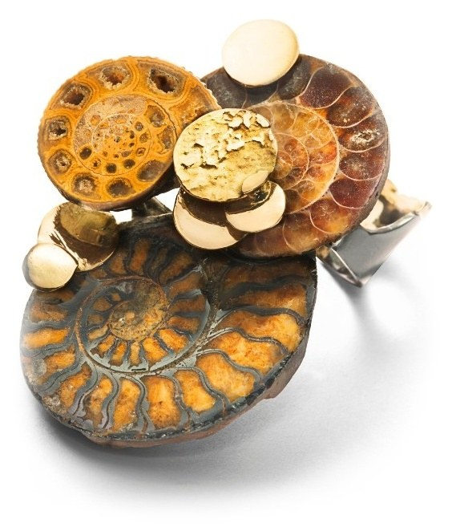
Pendentif. Ammonite du Maroc, fragments de rouille, opales d’Éthiopie, or jaune 750/1000e, cuivre, argent 925/1000e.
Puisque notre temps est compté, il nous appartient de devenir.
J’ai imaginé cette pièce comme un mouvement d’élévation. Les formes montent, se développent, cherchent toujours plus haut. L’ammonite y est comme une horloge d’un autre temps. Face à ce temps immense, il y a le nôtre : celui qui nous est donné pour apprendre, grandir et nous accomplir.
Crédit photo : Olivier Foulon
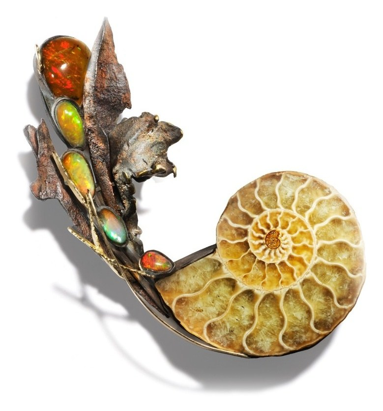
Pendentif. Perles baroques de Chine, opales d’Éthiopie, opales de feu du Mexique, fragments de rouille, argent 925/1000e.
S’accomplir, c’est aussi savoir jouir pleinement de la vie.
Avec Agapes, j’ai voulu retrouver quelque chose de la gourmandise de Gargantua : l’abondance, la couleur, la générosité. Les opales de feu, les perles baroques et les ors se mêlent aux rouilles dans un tourbillon gourmand. Orange, chocolat, crème chantilly… J’ai voulu faire de cette pièce une invitation à goûter au monde et à se réjouir d’être vivant.
Crédit photo : Olivier Foulon
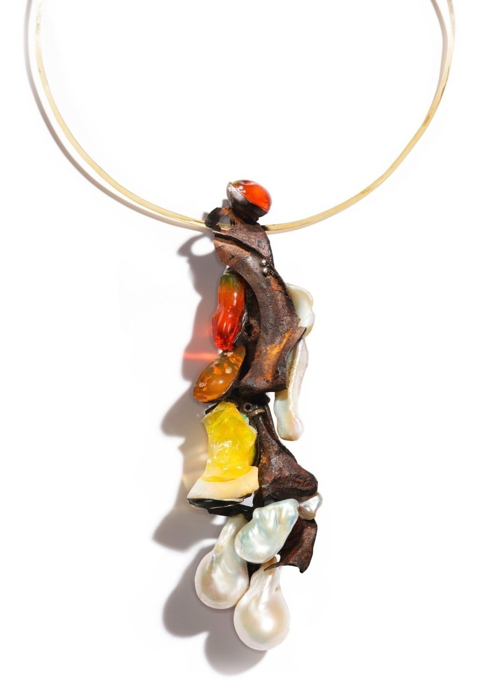

Diplômée en Design Industriel de l’École des Beaux-Arts de Tunis et de l’AFEDAP (1997). En 2003, je fonde ma galerie de bijoux contemporains à Paris, que je dirige depuis.
Mon approche du bijou s’apparente à celle d’un architecte : je conçois mes pièces comme des « architectures à porter », aux lignes fluides, épurées et intemporelles.
Ma recherche artistique repose sur l’équilibre : entre les formes, les matières, les couleurs, et sur une quête de complémentarité.
La nature constitue ma principale source d’inspiration : structures végétales, ossatures, textures organiques nourrissent mon imaginaire. Je privilégie les matériaux naturels : pierres que je taille, bois, plumes…
Le bijou n’est pas un simple ornement ; il représente un lien du corps au monde, un objet porteur de sens. Ce lien est lui aussi une quête : celle de la reconnaissance de la place de l’individu dans un groupe.
Depuis quelques années, mes pièces uniques sont donc construites comme des chapitres de vie, ils racontent mon propre rapport au monde.
Raconter Gargantua en bijoux
À travers ces bijoux, j’ai voulu raconter Gargantua : suivre, chapitre après chapitre, les étapes d’une vie qui se transforme sous nos yeux.
Derrière les excès, l’humour et l’apparente simplicité du récit, Rabelais fait peu à peu émerger une pensée humaniste, fondée sur la liberté, le savoir, le choix et l’émancipation.
Chaque pièce prend appui sur un épisode qui m’a particulièrement marquée et en extrait une image, un geste ou une idée que le bijou vient à son tour raconter.
Du crâne, symbole de mort et de renaissance, aux colonnes de Thélème, de la relation à l’autre, au libre choix, les bijoux deviennent autant de fragments du récit.
J’ai voulu raconter Gargantua en bijoux : traduire son parcours, non pas en l’illustrant, mais en faisant de chaque pièce une interprétation personnelle de son histoire.
Broche. Os, or jaune, argent.
D’un soldat, il ne reste qu’un crâne, recouvert d’or.
La broche questionne ce que nous choisissons de retenir de la vie. Le crâne, fin autant que commencement, devient le symbole d’une métamorphose. Comme Gargantua, qui renaît à lui-même lorsque son regard sur le monde et sur l’apprentissage se transforme.
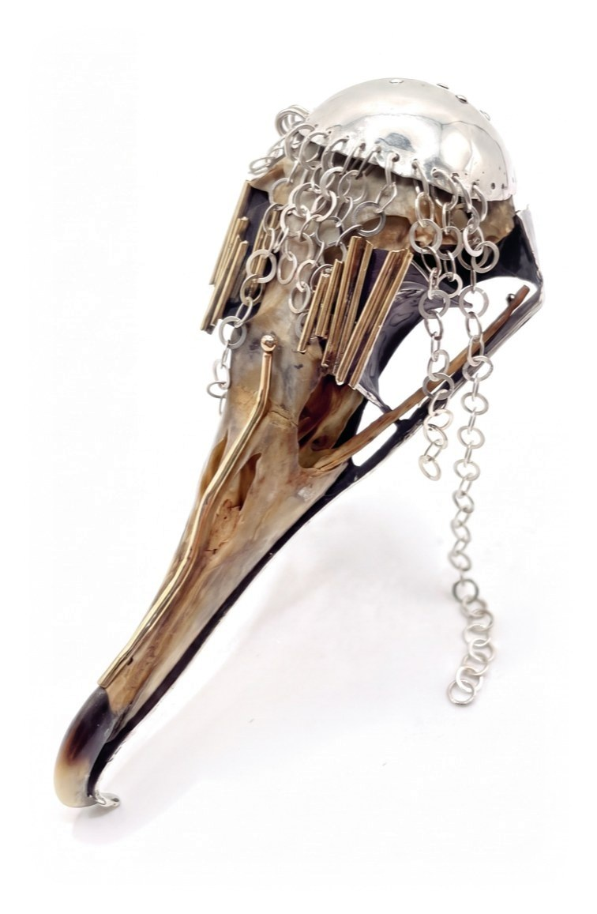
Boucles. Argent, aluminium, galalithe.
Inspirés de la naissance de Gargantua chez Rabelais, ces pendants d’oreille évoquent son apparition au monde par l’oreille de sa mère et son premier cri : « À boire ! »
Leurs formes d’ogives, imposantes et légères, s’ouvrent comme les pétales d’une fleur, entre naissance et démesure.
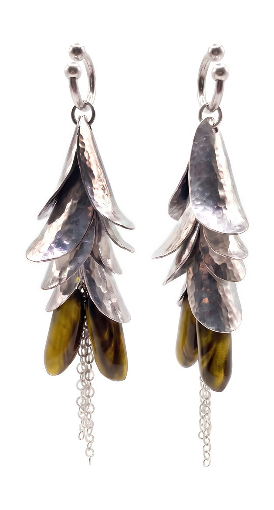
Bague. Ébène, argent, quartz à rutiles.
Deux bagues qui se répondent sans jamais se confondre.
À l’image des Thélémites, elles évoquent une relation fondée sur le choix, l’accord et la liberté de chacun. Ils accordent leurs habits, étudient ensemble et choisissent collégialement leurs activités.
Ici, le bijou devient le signe d’une complicité librement choisie : être deux, sans cesser d’être soi.
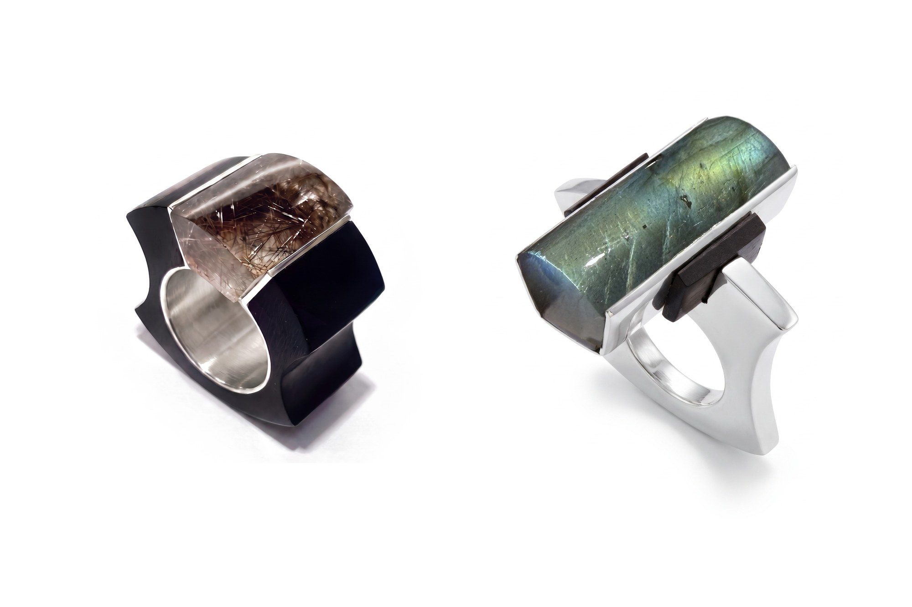
Collier. Ébène, or jaune, argent.
Inspiré des colonnes de l’abbaye rêvée par Gargantua pour Frère Jean des Entommeures, ce collier évoque un lieu où les règles s’effacent au profit de la liberté.
Thélème devient ici une architecture intime, un espace à porter, construit autour du désir et de la volonté individuelle.
Entre ordre et émancipation, les colonnes ne soutiennent plus un édifice : elles dessinent un idéal, celui d’une vie choisie.
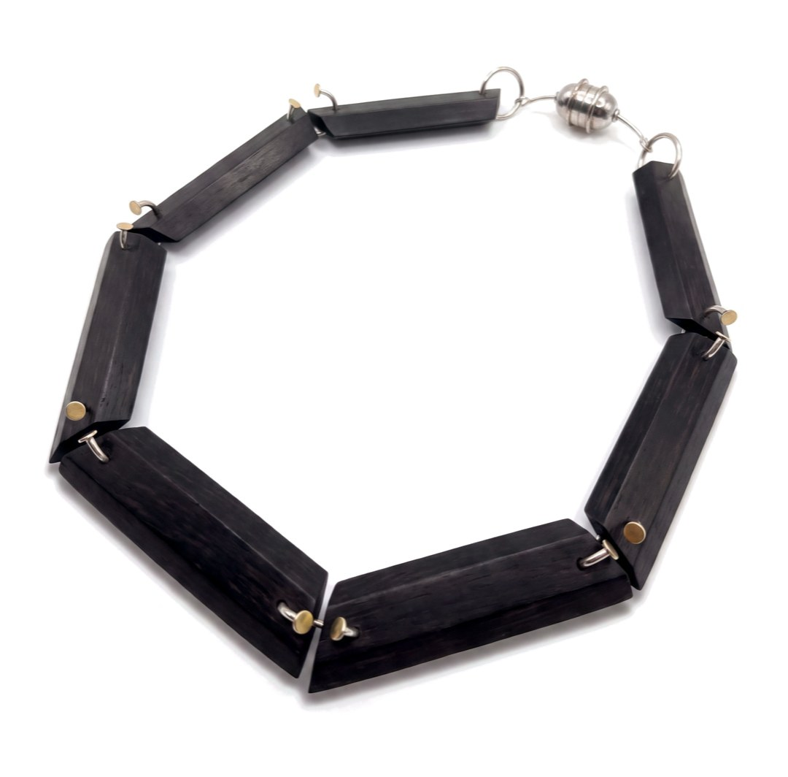
Broche. Argent, bois, pierres brutes ou taillées.
Argent, bois, pierres brutes ou taillées : chaque élément existe seul et peut se poser librement sur le vêtement. Rassemblés, ils composent une broche ; séparés, ils deviennent autant de possibles.
Le bijou se transforme ainsi au gré de celui qui le porte, sans forme imposée ni règle à suivre. Une invitation à faire sien l’objet, librement : fais ce qui te plaît.
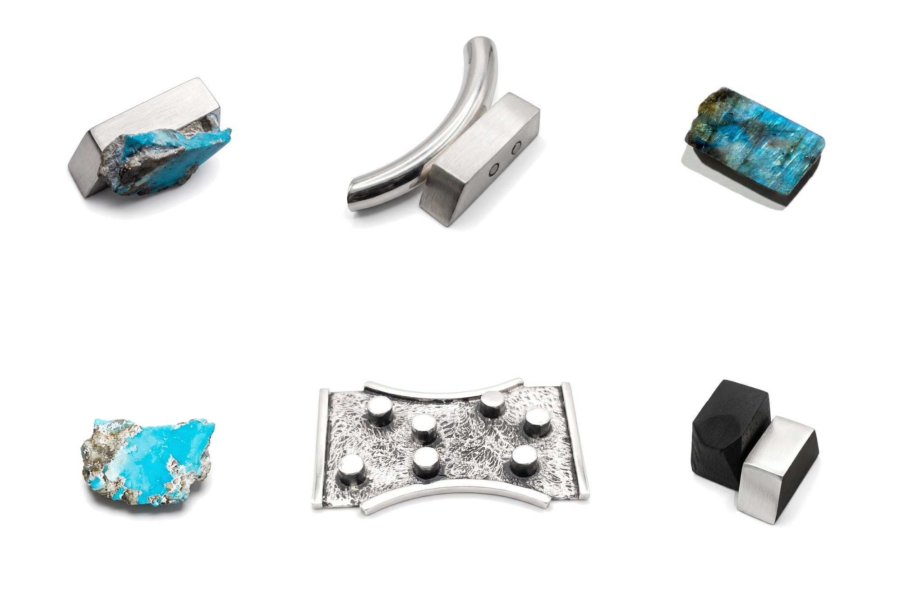
Gargantua
Parcours Bijoux Paris et l’association d’un bijou à l’autre
Galerie Psyché Paris
Bruno Laubin
Galerie MiniMasterpiece
Ville de Paris, Bureau du Design, de la Mode et des Métiers d’art
Atelier Néerlandais
The French Jewelry Post
Palais Galliera, musée de la Mode de Paris
Musée des Arts Décoratifs
Institut culturel du Mexique
Klimt02
Université Paris 1 Panthéon-Sorbonne
Sartoria
Elemento
Gargantua
05 au 17 octobre 2026
Galerie Psyché Paris
18 rue du Pont Louis Philippe, 75004 Paris
Agnès Dubois, @agnes.dubois.bijoux
Faust Cardinali, @faustcardinali
Thierry Vendome, @thierry_vendome
Amira Sliman, @amiraslimanjewellery
Agnès Dubois, Alessandro Schinco, Olivier Foulon
Portrait d’Agnès Dubois : Manon Dubois
gargantua-paris.github.io
parcoursbijoux.com, @parcoursbijoux
Un projet initié par Amira Sliman